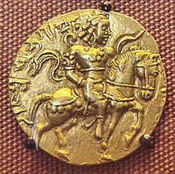
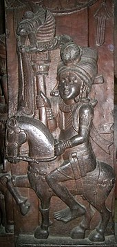
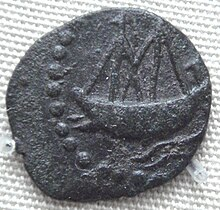
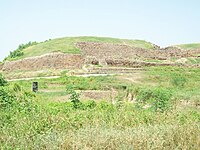

Indus Valley Civilisation
Fortified cities have been excavated from the Indus Valley Civilisation with thick and tall walls. Banawali is among
the earliest sites in the world where moats have been discovered. These forts also feature square and round bastion
and contain a citadel constructed at an elevated height.[1] Sites such as Mohenjo Daro and Dholavira exhibit some
outstanding examples of Bronze Age Indian fortifications with their thick tall walls, with the walls made of burned
bricks at some places solid mud-brick embankment have been discovered which run for twenty five feet (7.5 meters)
without reaching the bottom.[2] Sites such as Desalpar, Dholavira's have yielded massive stone fortifications and
the acropolis is extensively fortified with tall standing walls and furnished with ramparts and gateways.

The Vedic and Mahajanapada period
An excavation at Sinauli's necropolis has yielded copper swords, helmets and chariots, dating from 2000 to 1800
BC,which suggests the presence of a warrior Indo-Aryan people who followed Vedic religion in the region during
the
Copper-Bronze Age (2000 BC–1200 BC).[6]The Rigvedic tribes of Indo-Aryans were led by their kings (raja) and
engaged in wars with each other and other
tribes. They used bronze weapons and horse (ashva) -drawn spoke-wheeled chariots (ratha) described prominently
inthe Rigveda. The main share from the booty obtained during cattle raids and battles went to the chief of the
tribe.The warriors belonged to the Kshatriya varna. The earliest of such battles is noted in Rigveda as the
Battle of
theTen Kings.

The Indian dynasties
The expansionist Emperor Bimbisara conquered Anga in what is now West Bengal and strengthened the military of
Magadha's capital, Rajagriha. Ajatashatru built a new fort at Pataliputra, Magadha's new capital, to launch an
attack on Licchavis across the Ganges River. Jain texts tell that he used two new weapons; catapults and a
covered chariot with swinging mace that has been compared[by whom?] to modern tanks.
Nanda dynasty
Main article: Nanda Empire
The Nanda dynasty originated from the region of Magadha in ancient India during the 4th century BC. At its
greatest extent, the empire ruled by the Nanda dynasty extended from Bengal in the east, to Punjab in the west
and as far south as the Vindhya Range.
In 327 BC Alexander the Great began his foray into Punjab. King Ambhi, ruler of Taxila, surrendered the city to
Alexander. Alexander fought an epic battle against the Indian king Porus in the Battle of Hydaspes (326).
Despite winning, Alexander decided to turn back and end his campaign due to pressure from his generals and
troops who were tired and fatigued because of constant battle.

The Golden age
According to some interpretations of the Puranas, the Satavahana family belonged to the Andhra-jati ("tribe")
and was the first Deccanese dynasty to build an empire in daksinapatha (southern region). The Satavahanas (also
called Andhra and Shalivahan) rose to power in modern Telangana, Andhra Pradesh and Maharashtra around 200 BCE
and remained in power for about 400 years. Almost the whole of present-day Telangana, Maharashtra, Madhya
Pradesh, Chhattisgarh, Odisha, Goa, Karnataka, and Andhra Pradesh came under Satavahana rule. Their first
capital was Koti Lingala, as well as Paithan, then called Pratishthan.
